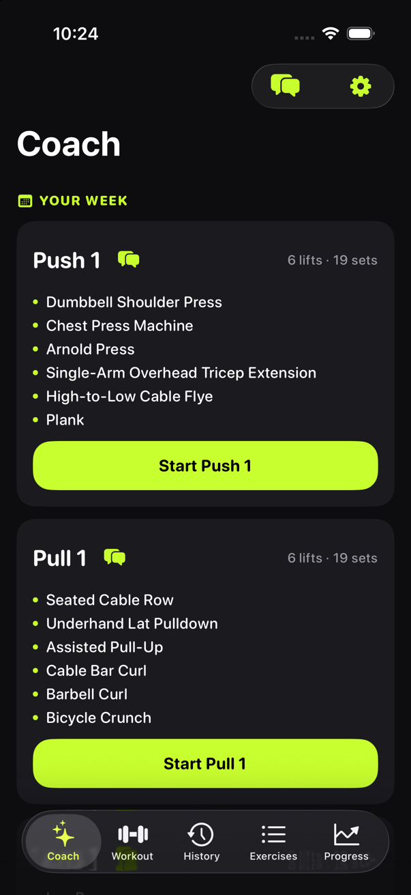
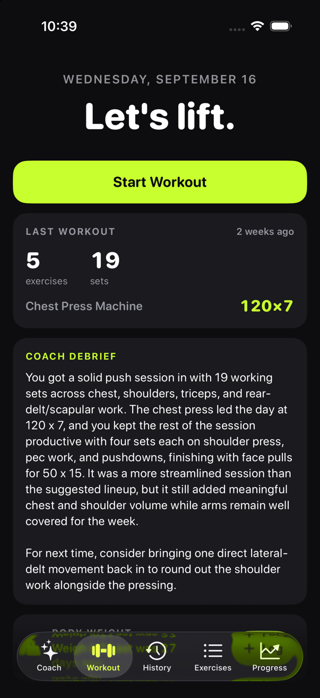
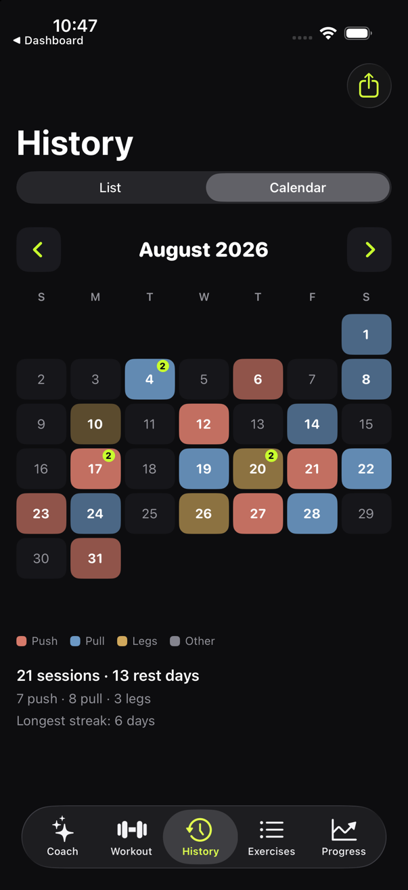
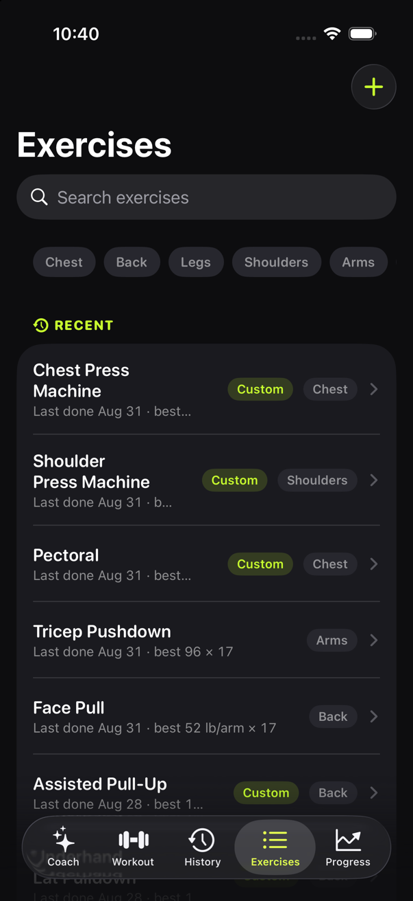
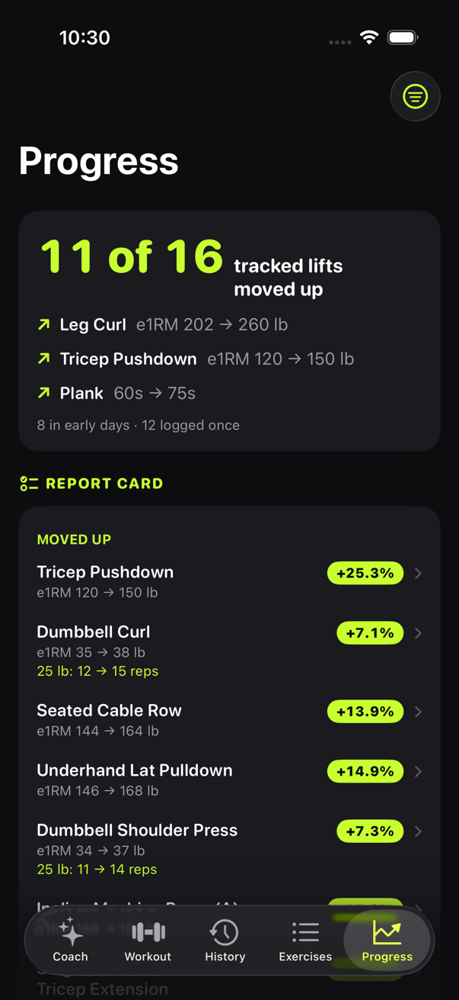

FitLog — a strength-training app with a coach that plans the week with you
An iPhone app I designed for my own training and use every week. A coach works out your weekly program in conversation, prescribes each session from your own history, and writes a debrief when you finish. Everything stays on the phone: no account, no server. Shown here as a case study; the app runs on an iPhone, not in a browser.
Product designStrength trainingiOSSwiftUIBuilt with Claude Code
96automated coaching scenarios that pin down how the coach must behave
17muscles in the model behind every exercise, from a 2026 research review
154commits in one month, built and tested against my own training log
The idea
Training apps either log what you did or hand out generic plans. I wanted a coach that reasons from my own history and the equipment in front of me, follows progression rules I actually trust, and never quietly changes my data. The week is a fixed rotation of named days; the coach helps you build it in conversation, and every suggestion it makes is checked by the app against your equipment and your rules before it counts.
What it does
Plans the week with you. The first program comes straight from your log; you edit it by hand or talk it through with the coach, who shows the whole week as a card until you accept it.
Prescribes each session. Say how long you have and how you feel; the app assigns each lift its sets, reps and weight. A rough day drops sets, never weight, so a lighter bar can never silently block the next earned jump.
Logs and progresses. Rest timer, supersets, timed holds, personal records caught mid-set. Weight goes up by a percentage earned at the top of the rep range on two sessions running, and the card tells you where you stand.
Looks back. A calendar coloured by day type, a written debrief after each session, and a report card of which lifts moved up.

Coach — the week as cards; the chat button opens the program conversation.

Workout — Start, the last session, and the coach’s debrief.

History — a calendar coloured by day type.

Exercises — search, filters, and last-done and best lines.

Progress — the verdict and the report card.
What it shows
Product judgment grounded in real use: rules written from experience and revised from evidence, including the willingness to cut a feature that was not earning its place.
Domain research turned into design: a muscle model from the literature rather than convention.
Putting an AI where it helps and fencing it where it does not: the coach suggests, the app enforces, and everything works without a key.
Running a month-long build with a coding agent through specs, a verified queue and automated scenarios.
A personal app, not on the App Store; it runs on my iPhone through a developer install.